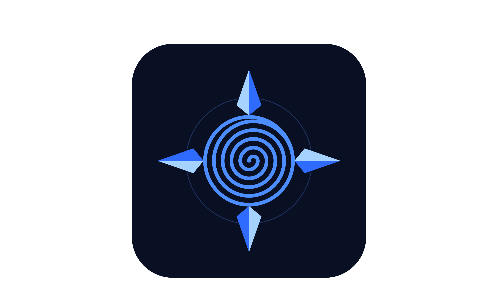
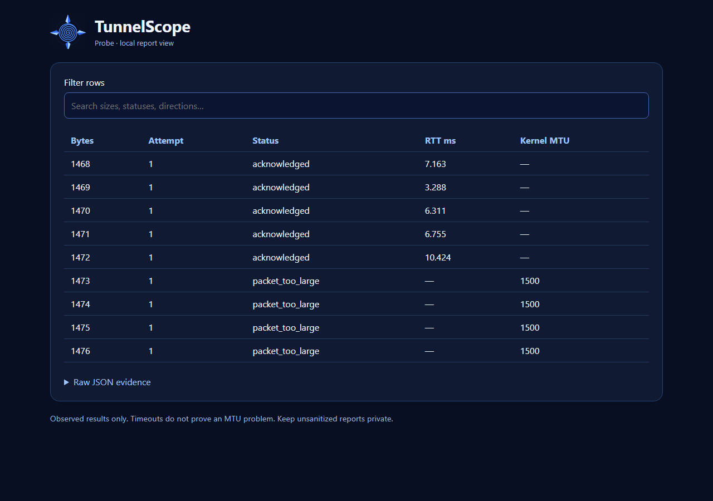

TUNNELSCOPEv0.4.1 · ALPHA

IPv4 / IPv6 · JSON / HTML

Çevrimdışı rapor ve iki VM doğrulaması2 görseli keşfet
Görseller projenin GitHub deposundan alınmıştır.
PYTHON · MTU & PAKET BOYUTU ANALİZİ
TunnelScope
IPv4/IPv6 UDP denemeleriyle paket teslimini ölçen Linux aracı. Gönderici ve alıcı kayıtlarını karşılaştırıyor; sonuçları JSON ve çevrimdışı HTML raporlarıyla görünür kılıyor.
v0.4.1 alpha · PyPI’da yayımlandı. Ubuntu ↔ Debian laboratuvarında 24/24 UDP denemesinde yanıt alındı.
Teknik ayrıntılar
Boyut taraması, gönderici/alıcı korelasyonu ve her yönü ayrı ölçerek karşılaştırma. MTU sınırı, PMTU black-hole ve engellenen ACK için kontrollü Linux laboratuvarları bulunuyor. İki VM deneyi 64–1400 bayt UDP yüklerini kapsıyor; bu sonuç kesin yol MTU’sunu belirlemiyor. Otomatik uçtan uca MTU keşfi ve kök neden tanısı henüz yok.